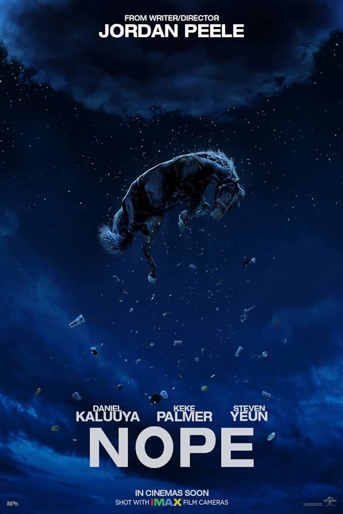
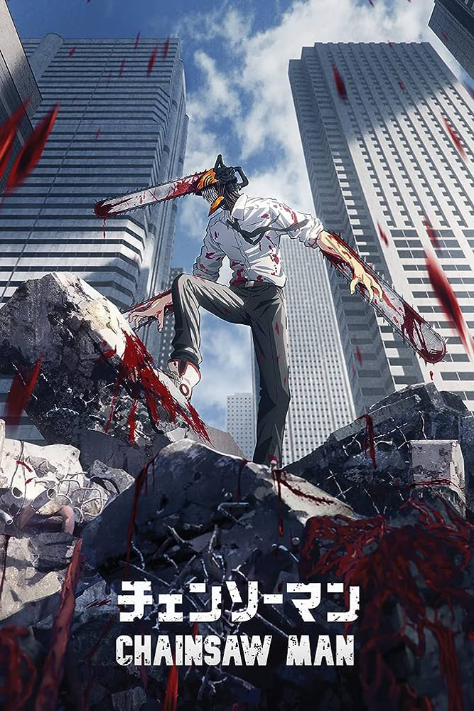

Some Works Already Discussed
Explore the images below to view summaries of some of the discussed works. Simply hover over each to gather additional information.

After random objects falling from the sky result in the death of their father, ranch-owning siblings OJ and Emerald Haywood attempt to capture video evidence of an unidentified flying object with the help of tech salesman Angel Torres and documentarian Antlers Holst.

Unravels the mystery of a nightmarish town in middle America that traps all those who enter. As the unwilling residents fight to keep a sense of normality and search for a way out, they must also survive the threats of the surrounding forest; including the terrifying creatures that come out when the sun goes down.
Yuji Itadori, a caring teenager, joins his school's Occult Club. After encountering a cursed talisman, Sukuna's demon finger, Yuji consumes it to safeguard his friends. He becomes Sukuna's host but finds he can control the inherited magic independently. To free himself, Yuji enrolls in the Tokyo Jujutsu College to consume all of Sukuna's fingers for a complete exorcism and liberation.

Moving the action out of the woods and into the city, "Evil Dead Rise" tells a twisted tale of two estranged sisters, played by Sutherland and Sullivan, whose reunion is cut short by the rise of flesh possessing demons, thrusting them into a primal battle for survival as they face the most nightmarish version of family imaginable.

Apollo Kagwa inherits a box of books and recurring dreams after his father's disappearance. Now a father with his wife Emma, they grapple with exhaustion and anxiety. Emma, initially suspected of postpartum depression, commits a shocking act and vanishes. Apollo embarks on a quest for a family different from his expectations, leading him to a forgotten island, a secretive graveyard, and an immigrant-legend-filled forest
